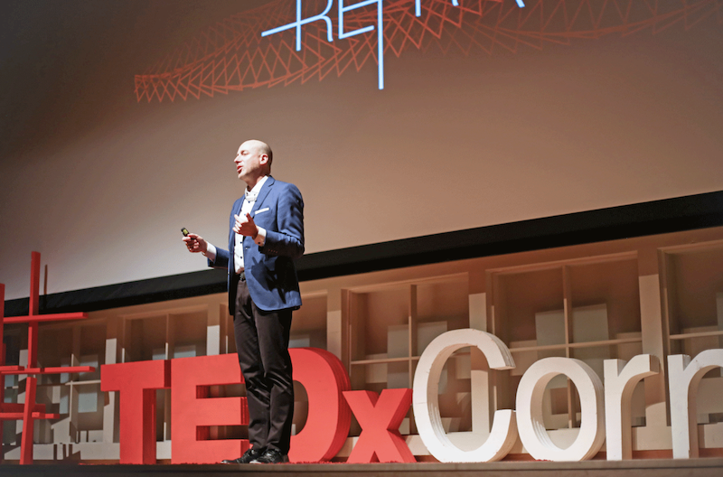
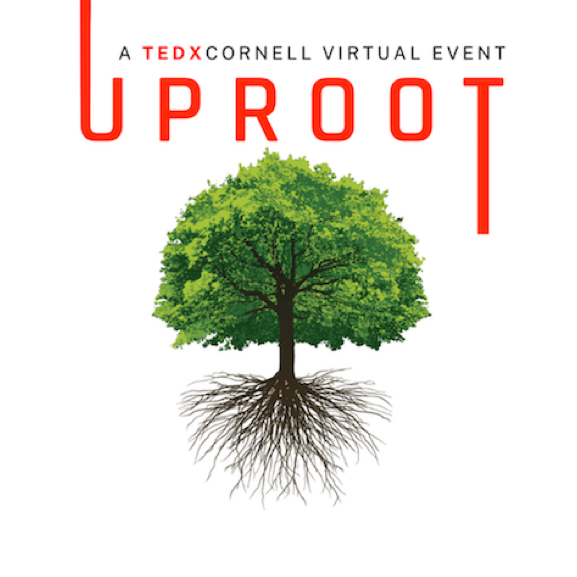
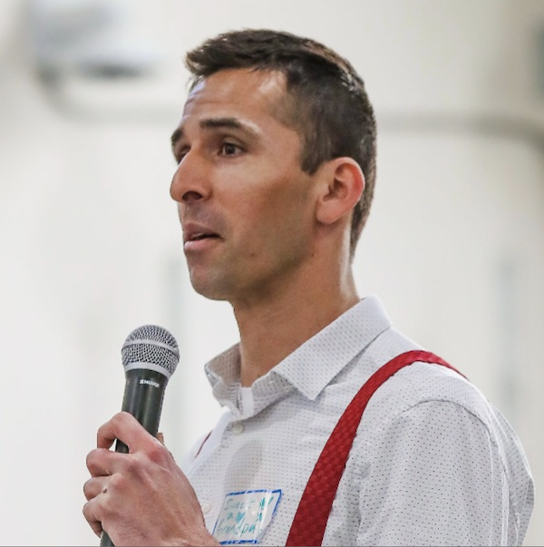
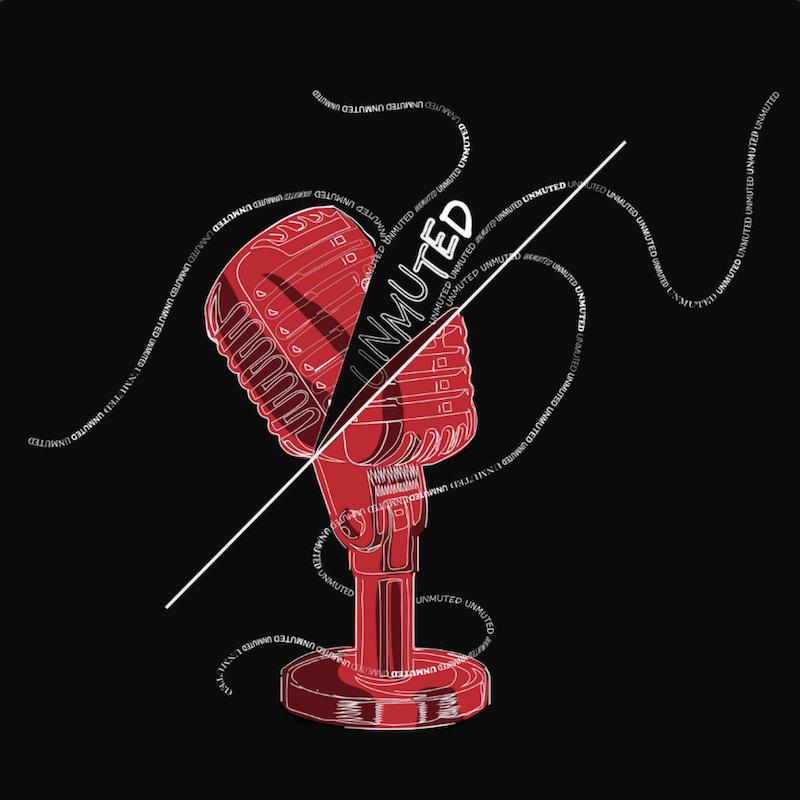
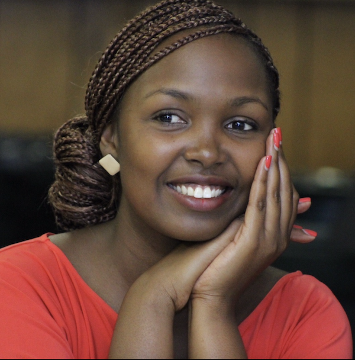

TEDxCornell is dedicated to making ideas worth spreading heard. Currently, the TEDxCornell Talks event is held every academic year. Passionate and thoughtful speakers from the Cornell community and beyond come together and tell their stories in hopes of enlightening the Cornell audience. Furthermore, TEDxCornell keeps introducing new ways of communication and idea spreading. For example, the virtual salon series in 2021 enables the audience to interact more closely with the speakers.

2021: Uproot

Virtual Salon Series
During the '20-'21 school year, the TEDxCornell team shifted to a series of virtual events instead of our usual singular main event. The virtual series included two Salon events which were smaller but more interactive, discussion-based events. The virtual format allowed for participants to ask our speakers questions and engage with their talks through different activities. The series was concluded by a virtual main event.
TEDxCornell Talks
On May 2nd, 2021, we hosted six speakers from our Cornell community and beyond to share ideas that would educate, entertain, and inspire. Our speakers discussed topics ranging from today's most important social issues to using psychedelic-assisted therapy to treat PTSD. The event was held on live stream to allow flexibility for our speakers and audience during the pandemic.
In the midst of the pandemic, we were forced to introspect and reevaluate ourselves, our communities, and the world around us. With the challenges that we face come great opportunities for growth and change. Our 2020 speakers addressed our most pressing social issues, shared groundbreaking and hope-inspiring research, dug deep to share their personal stories, and inspired us to reflect on what opportunities lie where we least expect them.
Speakers and Topics:
The Healing Power of MDMA through Reconnection
Marcela Ot'Alora
Psychotherapist, Artist
Marcela is an artist and a psychotherapist who practices and conducts research on MDMA-assisted therapy. In her private practice she works in partnership with clients to nourish awareness and connection to innate essence. For over 30 years her interest and focus on trauma has led her to understand the healing process as an intimate re-connection to self, others, and the world, through compassion, acceptance, and honoring of each other’s human spirit. In addition to working with trauma and PTSD, she has dedicated her professional life to teaching, and research. With clients she uses art as a vehicle for deepening and processing experiences through non-verbal autobiographical storytelling.
Why You Should Never Tell a Black Child They Act White
Danial James II
Podcast & Radio Host, Student Leader
Daniel James II uses his platform as an African American, a Southerner, and a Zoomer baby to empower, celebrate, and uplift the voices too often neglected, and too often forgotten. Born in Marion, South Carolina, a rural working class town, Daniel James II gained his place as a junior at Cornell University, carrying with him to the Ivy League a desire to better the lives of people. As the creator and host of Black Voices on the Hill, a podcast & radio show, he aims to amplify the voices of black students, alumni, and city leaders. Inspired by the deaths of George Floyd, Ahmaud Arbery, and Breonna Taylor, he has been able to reach thousands in upstate New York, talking weekly about racism, sexism, and activism, with guests ranging from TikTok sensations, investment fund creators, to the city mayor himself. As a mentor at a local carceral facility and president of the Labor School student body, Daniel has skillfully used his voice over the airwaves to serve the public and reach the masses. This spring, he is an Emerging Leader intern for the Congressional Black Caucus.
The American Dream is a Nightmare for Workers
Jarry Williams Jr.
Union Leader, Entrepreneur
In college, Larry Williams Jr. landed a job at a union and has never looked back. Since then, he's worked his way up and created his own means for impacting all workers in the U.S. Larry is founder of UnionBase.org and co-founder of Progressive Workers Union (PWU). UnionBase is the first secure social networking and education platform for unions and union workers, and is regarded by Forbes and Fast Company as the leading digital platform for a new generation of workers. PWU is a growing and powerful national union for non-profit employees that was started at Sierra Club, America's largest environmental organization. Larry will be leading us through his journey and sharing insight on how we need to view this time as a call for change in the future of employment.
Democracy & Emerging Surveillance Technology: How We Stop 2030 From Becoming 1984
Ishan Sharma
Herbert Scoville Jr. Peace Fellow of Emerging Tech at FAS
Ishan graduated from Cornell in 2020 and now spearheads an initiative of the Federation of American Scientists aimed at countering 21st century digital authoritarianism, the focus of his TEDx talk. He’s spoken with over 40 surveillance industry experts, activists, leading scholars, government officials, and police chiefs to reduce the violence emerging surveillance technologies bring to minority communities, at home and abroad. Ishan is also an Advisor for the Day One Project, which has curated 100+ action-oriented science & technology proposals and informed policy decisions at some of the highest levels of government. He holds a Bachelor of Science in Industrial and Labor Relations from Cornell University and has studied jurisprudence and international human rights law at the University of Oxford. Ishan is a board member of two nonprofits that aim to empower youth through mentorship and media literacy, and he is one of 24 Senior John Lewis Fellows around the world investigating the future of democracy, oppression, and human rights in the 21st century.
Stop Cancelling Yourself
Cat Hoke
Co-Founder, Hustle 2.0
Over 17 years, Cat's efforts have led 7,000 executives, entrepreneurs, and investors to volunteer as mentors and employers for 8,500 formerly incarcerated program graduates. Her programs reduce violence and have produced leading recidivism rates of under 8%. As the only girl on the high school wrestling team and as a Brazilian jiu-jitsu fighter, Cat mastered the art of “breakfall”: how to prevent injury when you get taken down. Breakfall proved to be a transferable skill in her career as a three-time entrepreneur, disrupting the American prison industry. Cat works with gang leaders in the most notorious prisons, leading gang intervention programs. She has survived career-ending threats and devastating takedowns. Seth Godin published her best-selling book, A Second Chance: For You, For Me, and for the Rest of Us. Fast Company named Cat one of the 100 Most Creative People in Business, Forbes named her on 40 Women to Watch Over 40, and she has received the MDC Partners Humanitarian Award.
How I Got Out of a Prison Gang
John Jackson
Director of Correctional Partnerships, Hustle 2.0
Prison gang members live by a code, “’Til the casket drops.” What if there was a way to make it out alive? At 17, John was introduced to a life of crime by the person who promised to protect him. He spent his next 18 years in prison, heavily entrenched in gang culture. Prison officials labeled him as “the worst of the worst” and locked him in a notorious supermax prison, Pelican Bay. John transformed his life and now works with gang leaders to stop the generational cycle of gang violence nationally. Together, they’ve authored the first-ever retirement plan for gang members, called Squaring Up. With Hustle 2.0, John has co-authored 10 books that provide rehabilitation and healing for people in jails and prisons nationally.

2022: UnMuted

TEDxCornell Talks
For the past two years, we had all had to sit behind our screens, attending meeting after meeting, unable to properly express our ideas and our stories. In April 2022, we finally came to a in-person Talks event in Kennedy Hall on the Ithaca campus. We were excited to introduce seven fantastic speakers each with unique talks and "ideas worth spreading".
Speakers and Topics:
Save the World: Eat a Bug
Nathan Laurenz
Cornell Student, Entomophagy Major
Nathan is a senior at Cornell concentrating in entomophagy, the practice of edible insects. He has worked for insect production companies in Europe and Asia and held a lifelong passion for insects. His TEDxCornell talk titled “Save the world: Eat a Bug” will focus on his journey through entomophagy and why he believes insects are the future of food.
You Are Your Best Audience
Matthew Dicks
Best-Selling Author, Elementary School Teacher
Matthew Dicks is an elementary school teacher and the internationally bestselling author of several books including Memoirs of an Imaginary Friend and Storyworthy: Engage Teach, Persuade, and Change Your Life Through the Power of Storytelling. He’s the founder and artistic director of Speak Up, a Hartford-based storytelling organization that produces shows and a weekly podcast, and teaches storytelling to corporations, nonprofits, universities, and more. He loves eating ice cream cake, playing golf poorly, tickling his children, staring at his wife, and not sleeping. Matthew’s TEDxCornell talk will talk about the hidden powers of storytelling.
Your Love Stories: The Secret to Happiness in Romantic Relationships
Karin Sternberg
Researcher, Entrepenuer, Cornell Professor
Dr. Karin Sternberg is a researcher and entrepreneur based in Ithaca, NY. She has a Ph.D. in psychology from the University of Heidelberg, Germany, as well as an MBA from the University of Cooperative Education in Karlsruhe, Germany. She completed some of her doctoral research at Yale University and her postdoctoral work at the University of Connecticut. Afterward, she worked as a research associate at Harvard University’s Kennedy School of Government and School of Public Health. She has held a grant from the National Institutes of Health for the development of a cognitive training program for seniors. Dr. Sternberg’s interest focuses on the application of psychological/behavioral research with the purpose of improving people’s lives.
You Are More Than Your Resume
Raj Suchak
Author and Entrepeneur
Raj Suchak is an author and entrepreneur who started 2 companies with zero funding and sold his first startup to a large publicly-traded consulting company. For his start-ups, Raj has hired people based on grit from companies like Wegmans, Subway, and others, and mentored them to become technical experts. In his TEDxCornell talk titled "You are more than your resume," Raj hopes to inspire those looking for job opportunities to show their grit rather than just relying on resumes and cover letters.
How I Learned to Accept My Autism Diagnosis
Carson Taylor
Student Advocate
Carson transferred to Cornell as a sophomore after a year at a military college, and was diagnosed with autism shortly after. Since then, he has been an advocate for neurodiversity on campus, serving as Co-President of the Disability Awareness Union, Cornell’s undergraduate association for students with disabilities and their allies. His TEDxCornell talk “How I Learned to Accept My Autism Diagnosis” focuses on the journey to accepting neurodiversity as a part of our identities.
Dydine Umunyana Anderson is the author of Embracing Survival and survivor of the Rwanda genocide against the Tutsis. Dydine co-founded Umuco Love, a non-profit that provides educational programs to raise awareness and understanding of the connections between all people through cultural storytelling. Her TEDxCornell talk “The Power of Cultural Storytelling” will explore how cultural storytelling facilitates trauma healing, both for the storyteller and the listener.

Fairness Through Algorithmic Thinking: Designing Better Congressional Districts and Elections
David Shmoys
Cornell Professor, Operations Research and Computer Science
David Shmoys is a professor of operations research and computer science at Cornell, who is passionate about teaching the fundamentals of optimization modeling and algorithms to his students. In his research, he uses optimization models to help the world run better, in settings that range from improving the operations of Citibike, to long-term forestry planning to protect the red-cockaded woodpecker, an endangered species. In his TEDxCornell talk “Fairness Through Algorithmic Thinking: Designing Better Congressional Districts and Elections,” he will discuss optimization tools to create fairer congressional districts, as well as designing rules for this that are more resilient to partisan manipulation.